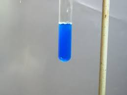

Ecco un altro piccolo intermezzo, facile facile, scaturito giocando d'estate con i sali di cobalto.
Questo metallo forma una miriade di complessi con i più svariati anioni: uno di questi, abbastanza insolito, è il sale di Blomstrand, ovvero cobaltocianato di potassio K2[Co(OCN)4] dall'intenso e bel colore blù-azzurro.
La formazione del colore è una delle reazioni dell'analisi qualitativa classica durante il riconoscimento dell'anione cianato -OCN (naturalmente vale anche l'azione complementare: si può ricercare il cobalto usando un cianato, ma di solito si preferisce il saggio di Vogel, usando non un cianato ma un tiocianato).
E' interessante notare che i quattro amici idrogeno, ossigeno, carbonio e azoto si combinano tra loro (quando in rapporto 1:1:1:1) in tre modi diversi, dando origine ai tre acidi isomeri, instabili allo stato libero
- acido cianico H-O-C≡N
- acido isocianico H-N=C=O
- acido fulminico H-O-N=C
L'acido cianico è quello del cianato di potassio KOCN di questo post; è un sale di uso poco comune, che si forma oltre che per ossidazione del cianuro alcalino KCN anche in un bel modo che vedremo qualche altra volta.
L'acido isocianico è importante per certi isocianati organici (come il famigerato metilisocianato di Bophal CH3-N=C=O) impiegati per sintesi industriali per la produzione di pesticidi o polimeri.
L'acido fulminico è conosciuto in pratica solo per il suo sale di mercurio Hg(ONC)2, il più noto esplosivo innescante, ora quasi completamente sostituito da altre sostanze.
(Per completezza, ci sarebbe anche il trimero acido (iso)cianurico C3H3O3N3, ma non usciamo troppo dal seminato...).
Tornando al tema del giorno, il complesso colorato K2[Co(OCN)4] si forma facilmente trattando l'acetato di cobalto con cianato di potassio, secondo la reazione:
Co(Ac-O)2 + 4 KOCN --> K2[Co(OCN)4] + 2 K(Ac-O)
Se la quantità di acqua è grande il colore blù scompare perchè lo ione complesso si dissocia nei suoi componenti e rimane solo il tenue rosa del cobalto Co++
[Co(OCN)4]-- --> Co++ + 4 OCN-
Aggiungendo ancora cianato (oppure etanolo) l'equilibrio si ri-sposta a sinistra.
Le foto mostrano i due colori:


sol. di acetato di cobalto complesso con KOCN
oppure diluizione con acqua oppure aggiunta di etanolo.
Come dicevo all'inizio, giochetti estivi di poco impegno!
2 commenti